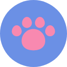

Everything Pets
A complete pet care solution for all your pet’s needs and beyond.

A complete pet care solution for all your pet’s needs and beyond.
The challenge was to design a digital product which would enable a user to track, record and share the health, medical, hygiene and progress information of their pets with their family members, friends and professionals.
There isn't one holistic reliable and feasible solutions for animal & pet friendly, safe and immersive experience between user(pet owner)-associated professionals (vets, shops, boarders, groomers, walkers, sitters, photographers) services, government and non-government organisations, friends and family as well as promoting awareness of animal safety and stray animal care through social and competitive activities.
To design an complete pet care product and services application with an pet centric approach along with the regards for functionality, feasibility and usability for the user, aiming for an complete market ecosystem for pets and strays care and safety solutions across various industries, professionals and NGO platforms.
RESEARCH
(Compitatve Analysis, Personal Interviews, Desk Research)
RESEARCH SYNTHESIS
(User Persona, Empathy Mapping, User Journey Map)
INTERACTION DESIGN
(Wireframes, Protypes, Micro-interaction)

I firstly came up with what if scenarios by considering and imagining myself in the users shoes, to understand the problems they already face or might in the future to better understand their pain points and touch points to develop a product vision and solution by further creating user personas, empathy and journey map.
I conducted a few user interviews and brain storming sessions with my family members and friends who have one or multiple pets and came up with what if scenarios beforehand for my questionnaires to probe them, and for a better understanding of their touch points.
The following was revealed:
10 highest rated other available offerings in the market were studied and it was found that there is no such produt in the market with such holistic solutions for pet care applications advocating and in affiliation with animal welfare. However, the research sheded light over the current user feedbacks and other obstacles or even the primary goal of the user for using the application.The findings were futher implemented during ideaion and design phase.
Based on the findings from the user interviews I conducted a few brainstorming sessions,using user persona, empathy map and User Journey Mapping, further did some competitive research to investigate the current offerings in the market and took inspiration from the particular features I like about them.
Based on the initial research findings through the user interviews a user persona was created of a young professional with great affection for animals and wants a pet although his profession requires him to travel a lot and has very limited time to spend with his pet or family.

Refefering to the persona a empathy map was also created to better understand the pain and gains of the users.

Along side a complete journey map was created for users since the inception of the users having a idea of having a pet in their life to almost all possible scenarios through out the lifetime were considered and based on these scenarios all the possible pain points, touch-points, needs and goals of the users regarding pets or animal welfare were understood.

From these findings, I decided as a product to identify the solutions and key business goals:
• Enable the user to easily take care and track basic hygiene, grooming and medical care of their pets.
• To provide a reach to the right professional help needed by the user and making it an easy and reliable experience.
• Enable user to monitor and track their pets activity when away from them.
• Help user find pet friendly places, services and exciting activities for the user and the pet to have an immersive experience together.
• To enable user to reach out for help during emergencies by integrating a network of local NGO’s and individuals/ professionals as volunteers.
Based on the above defined Product Vision and Solution and a brief idea of the categories of services to be catered to the user a Site map was created with a broad vision.

Categorising various services into various branches the the scope of work and further research requirements started to emerge clear along with need to determine and prioritise the initial MVP requirements.
Based on the research ideation and the product solution defined, derived at the following MVP features:
• Create pet’s profile.
- Enable the user to easily take care and track basic hygiene, grooming and medical care of their pets.
• Schedule hygiene tasks and set a reminder.
- Users can setup what hygiene tasks they require for their pet like bath, nails , ears,
grooming etc. and set reminder accordingly.
• Input pets biological data.
- Users can record weight, temperature and height data of their pets just to track
their progress or for any medical reference.
• Schedule hygiene tasks and set a reminder.
- Users can setup what hygiene tasks they require for their pet like bath, nails , ears,
grooming etc. and set reminder accordingly.
• Record medical history.
- Users can now easily keep track of their pets medical data such as vaccinations,
diagnostic reports, specific events or any veterinary visits and securely save and
share it with family, friends or professionals when needed.
After ideating and accumulating all possible creative yet feasible solutions, I started brainstorming ideas with sketches to realise a fair understanding of users inteeraction,refining the ideas. to derive at a possible features list. Thereafter, sketching Lo-fi wireframes and a basic structure of the product.


Although, with almost complete sitemap architecture for all the features & services drafted, 100+ wireframes later, a MVP prototype was developed and successfully tested it, documenting findings and observations. Also discussed the other features mentioned on the Homescreen as the product offerings were quite substantial, and needed validating from users point of view so as to prioritise the features further.
Following are a few higlidhted findings from the research:
Thank You